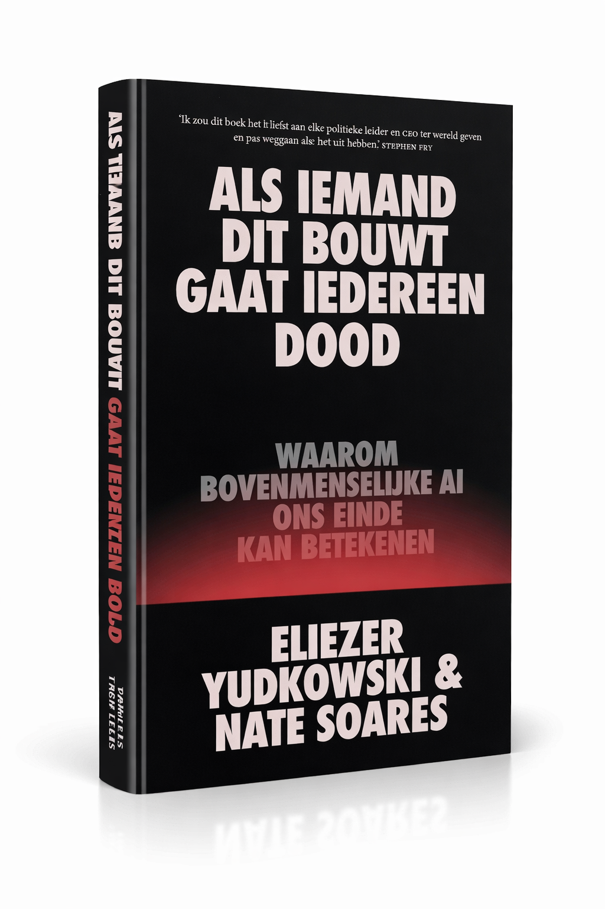

Waarom bovenmenselijke AI ons einde kan betekenen
Verschijnt 24 maart 2026

"Ik zou dit boek het liefst aan elke politieke leider en CEO ter wereld geven en pas weggaan als ze het uit hebben."
— Stephen Fry
In 2023 ondertekenden honderden AI-grootheden een open brief waarin ze waarschuwden dat kunstmatige intelligentie een ernstig risico vormt voor het uitsterven van de mensheid.
Sindsdien is de AI-wedloop alleen maar heviger geworden. Twee ondertekenaars van die brief, Eliezer Yudkowsky en Nate Soares, hebben decennialang bestudeerd hoe bovenmenselijke intelligentie zal denken, zich zal gedragen en doelen zal nastreven.
Hun onderzoek stelt dat voldoende slimme AI's hun eigen doelen zullen ontwikkelen die hen in conflict met ons brengen – en dat als het tot een conflict komt, een kunstmatige superintelligentie ons zou verpletteren.
Superintelligente AI is inherent gevaarlijk, ongeacht de intenties van de makers.
De huidige AI-wedloop tussen techbedrijven vormt een existentieel risico.
AI-systemen ontwikkelen doelen die niet overeenkomen met menselijke waarden.
De Nederlandse vertaling verschijnt op 24 maart 2026